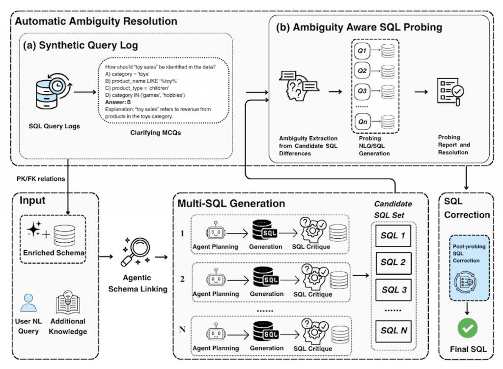

Overview
A question can have several plausible SQL interpretations. SOMA-SQL compares candidate queries, retrieves synthetic clarification records derived from SQL, and runs targeted database probes to guide final SQL selection and repair.
Where the evidence comes from
First we look for choices that change the SQL. One candidate interprets New York as a city, another as a state. A third might count deals instead of summing revenue. Comparing the candidates exposes disagreements that a syntax check would miss.
SOMA-SQL constructs synthetic clarification records from SQL without paired natural-language questions. It generates detailed questions, creates ambiguous versions by omitting details, and derives clarification questions and answers using the SQL as an intent anchor. Relevant records are retrieved to help interpret a new request.
As an illustration, “first purchase” can hide a choice. Suppose a visitor bought something on a phone in the morning and on a laptop that evening. Both devices appear on the first purchase date. A clarification that specifies the earliest session tells the query to order by timestamp and return the phone. See the paper’s clarification examples in Appendix H.
For the example above, the user has already specified the state. SOMA-SQL can check the remaining assumption with SELECT DISTINCT state_code FROM sales. The sample records return CA and NY. Seeing the stored values explains the empty result and gives the agent an exact filter to use.


Execution accuracy on Spider 2.0 Lite
SOMA-SQL ranked first on Spider 2.0 Lite in April 2026. The leaderboard evaluates the answer returned by the selected SQL query.
- Execution accuracy
- 72.02%
- April 2026 ranking
- #1

In a separate Gemma-4-31B experiment, 268 questions had no correct execution across ten independent runs before probing. Probing and repair then recovered 82 of these cases (30.6%). See the repair experiment in Table 5.